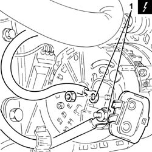
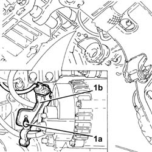
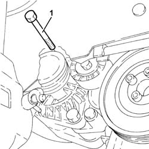
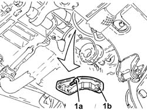
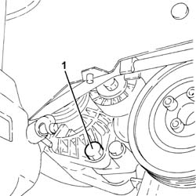
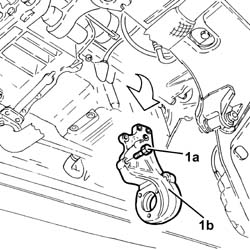
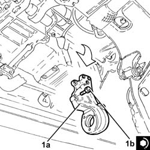
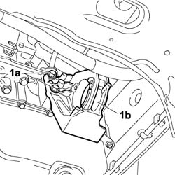
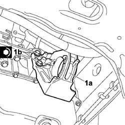

2710A32 intermediate drive shaft bearing support - r + r with intermediate drive shaft removed
- Path
- Procedures > 27 AXLE > 2710 FRONT AXLE > 2710A drive shafts and joints > 2710A32 intermediate drive shaft bearing support - r + r with intermediate drive shaft removed
- Kind
- repair procedure (removal / refitting; the operation number is the code)
- Applies to
- engines: 1.3 JTD 16V, 1.9 JTD 8V; all production periods
- Interactive page
- https://sloeber94.github.io/elrnDB-fDbl/en/#/2584610
Applies to: engines: 1.9 JTD 8V; all production periods
 Removing
Removing
 Refitting
RefittingEnsure that the ignition key is in the stop position, then disconnect the battery negative terminal.
 | Name | Connector |
|---|---|---|
- | Battery |
Proceed with removal
Op. 7055B54 PROTECTION/GUARD UNDER ENGINE - R.R.
Proceed with removal
1. Disconnect the electrical connections from the alternator.
Op. 1092G10 SINGLE ENGINE BELT - R.R.
| Name | Connector |
|---|---|---|
1 | Alternator |

Applies to: engines: 1.9 JTD 8V; all production periods
1. Undo the bolt (1a) and remove the electrical wiring mounting bracket (1b) from the intermediate shaft support.

Applies to: engines: 1.9 JTD 8V; all production periods
1. Undo the upper alternator fixing bolt.

Applies to: engines: 1.9 JTD 8V; all production periods
1. Undo bolts (1a) and remove the upper alternator mounting bracket (1b).

Applies to: engines: 1.9 JTD 8V; all production periods
1. Loosen the lower alternator fixing bolt, then partly release the bolt.

Applies to: engines: 1.9 JTD 8V; all production periods
1. Undo the bolts (1a) and remove the intermediate driveshaft mounting (1b).

Applies to: engines: 1.9 JTD 8V; all production periods
Refitting
Removing1. Place the intermediate driveshaft support (1a) back in its housnig and fix it tightening the bolts (1b) to the recommended torque.
 | Fastening | Component | Ø | Value (daNm) |
|---|---|---|---|---|
1b | Bolt | FRONT DRIVE SHAFT BEARING MOUNT | M10 | (Crankcase side) 4.5 ÷ 5.5 |

Applies to: engines: 1.9 JTD 8V; all production periods
Completely fit the lower alternator fixing bolt and screw in the nut but do not fully tighten it.
Place the upper alternator mounting bracket back in its housing and fix it using the bolts.
Tighten the bolts fixing the alternator to the recommended torque.
| Fastening | Component | Ø | Value (daNm) |
|---|---|---|---|---|
- | Bolt | ALTERNATOR ASSEMBLY | M10 | (Support side) 4.5 ÷ 5.5 |
| Fastening | Component | Ø | Value (daNm) |
|---|---|---|---|---|
- | Bolt | ALTERNATOR ASSEMBLY | M12 | (Support side) 6.3 ÷ 7.7 |
Connect the electrical connections to the alternator.
Place the electrical wiring mounting bracket in its housing on the intermediate shaft support and secure it using the bolt.
Proceed with refitting
Op. 1092G10 SINGLE ENGINE BELT - R.R.
Proceed with refitting
Connect the negative (-) battery terminal
Applies to: engines: 1.3 JTD 16V; all production periods
Removing
Refitting1. Undo the bolts (1a) and remove the intermediate driveshaft mounting (1b).

Applies to: engines: 1.3 JTD 16V; all production periods
Refitting
Removing1. Place the intermediate driveshaft support (1a) back in its housing and secure by tightening the bolts (1b) to the recommended torque.
| Fastening | Component | Ø | Value (daNm) |
|---|---|---|---|---|
1b | Bolt | FRONT DRIVE SHAFT BEARING MOUNT | M8 | [Rear lower crankcase side ] 2.0 ¸ 2.4 |

Topics linked from this page (4)
- 1092G10 single engine belt r r
- 7055B54 under-engine guard - r r
- A1B BATTERY ( BATTERY POSITIVE )
- A010 ALTERNATOR